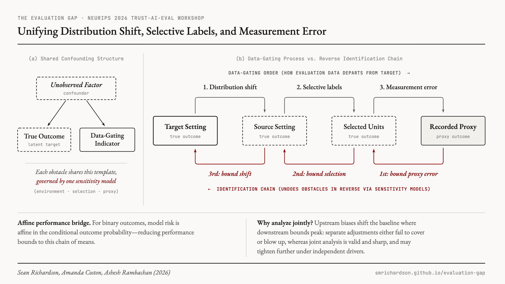

Three ways the data used to evaluate a predictive model can differ from the target setting routinely occur together:
We model all three obstacles through a shared causal template: unobserved confounding between the true outcome and a binary data-gating indicator corresponding to each obstacle (in-distribution, selected, accurately measured). With binary outcomes, the gap between observed and target performance is an affine function of the pointwise gap between observed and target conditional expectations, which telescopes into a sum of three obstacle-specific terms.
Motivated by this confounding structure, we govern each link along the reverse data-gating chain with a marginal sensitivity model (and a likelihood-ratio measurement tilt on the recorded proxy), and compare five methods for translating per-obstacle sensitivity budgets into bounds on target performance.
[0, 1] interval on 17–31% of simulated settings even under moderate confounding budgets (Γ ≤ 1.5–2).
| Method | Anchor & Coupling | Objective | Guarantee |
|---|---|---|---|
| 1. Naive separate | Plugs observed proxy into each link | Sum of maxima | Invalid (fails anchoring) |
| 2. Valid separate | Other links left unconstrained | Sum of maxima | Valid; frequently vacuous |
| 3. Banded separate | Anchors restricted to implied bands | Sum of maxima | Valid; conservative |
| 4. Joint chain | Single coherent law across chain | Max of sum | Valid & sharp (closed form) |
| 5. Joint + indep. drivers | Latent drivers factorize (UD ⊥ UR) | Max of sum | Tighter on conjectured region |
@inproceedings{richardson2026evaluation,
title = {The Evaluation Gap: Joint Bounds under Distribution Shift, Selective Labels, and Outcome Measurement Error},
author = {Richardson, Sean and Coston, Amanda and Rambachan, Ashesh},
booktitle = {NeurIPS 2026 Workshop: Can We Trust AI Evaluation?},
year = {2026},
url = {https://openreview.net/forum?id=uChoQnR1tj}
}